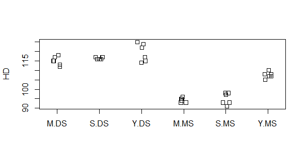

生物統計演習 第4回 分散分析
分散分析
第三回「検定」では、二つのグループ間の平均値の差の検定を行う際、\(t\)検定を用いることを説明した。二者間の比較は対比較
(paired test)と呼ぶが、比較したいグループが三つ、例えばAグループ,
Bグループ,
Cグループ、になった場合、AとB、BとC、CとAの比較を行う必要がある。この際検定の多重性の問題が生ずる。三者以上の比較を行う場合は、
多重比較 か、分散分析(Analysis of variance
(ANOVA)
を行う。まず分散分析を行い、有意であった場合は、多重比較による群間の差の検定に進むのが常套手段である。これを事後解析(post
hoc analysis)という。post
hoc解析は次の演習で行う。多重比較と分散分析の使い分けは、状況による。
https://www.jstage.jst.go.jp/article/kagakutoseibutsu/51/7/51_483/_pdf
にその説明が詳しい。
一元配置分散分析
三種類の有機肥料を三種類の区画に投入し、イネの収量を調査した(表)。肥料および栽培区画は収量に影響を与えているといえるか。5%水準で検定せよ。
表. 収量試験
| 肥料(Fertilizer) | 区画(Area) | 収量 (kg/ha) |
|---|---|---|
| A | D | 514.7 |
| A | D | 509.1 |
| A | E | 512.2 |
| A | E | 532.7 |
| A | F | 517.7 |
| A | F | 522.2 |
| B | D | 503.5 |
| B | D | 511.0 |
| B | E | 525.1 |
| B | E | 504.9 |
| B | F | 524.4 |
| B | F | 511.2 |
| C | D | 489.3 |
| C | D | 501.0 |
| C | E | 472.9 |
| C | E | 501.7 |
| C | F | 504.0 |
| C | F | 508.0 |
MATLABでグラフを作成しながら順に説明しよう。まずデータを入力する。手入力は時間がかかるので本演習では以下のコマンドを実行する。
% データ読み込み
URL = "https://raw.githubusercontent.com/qikushu/stat/master/anova1.csv"
d = readtable(URL)
d.Fertilizer = categorical(d.Fertilizer);
d.Area = categorical(d.Area);前回同様、まずは記述統計をおこない、データを俯瞰する。平均値、不偏標本分散を算出する。
% 全データの平均値を計算
mean(d.Yield) % 509.2
% Fertilizer 別の散布図の作成
scatter(d.Fertilizer,d.Yield);
% Fertilizer 別に平均と分散を示す
statByF = grpstats(d, 'Fertilizer', {'mean', 'var'}, 'DataVars', 'Yield')
% Area 別の散布図の作成
scatter(d.Area,d.Yield);
% Area 別に平均と分散を示す
statByA = grpstats(d, 'Area', {'mean', 'var'}, 'DataVars', 'Yield')
FertilizerおよびAreaの水準ごとの収量の散布図. すべての丸印の平均値を黒、各群の平均値を赤で記入しよう。
MATLABを用いた分散分析の実行
一元配置分散分析を行う。収量Yieldを応答変数、有機肥料の種類Fertilizerを独立変数とする。この場合モデル式を用いて
Yield ~ Fertilizerとあらわす。
mdl = fitlm(d, 'Yield ~ Fertilizer')
anova(mdl)
% 結果
SumSq DF MeanSq F pValue
Fertilizer 1600.4 2 800.2 7.3185 0.0060523
Error 1640.1 15 109.34 得られた表を分散分析表という。Excelでも作成できる。一行目について、DFはdegree of freedomで自由度、SumSqは Sum of squareで偏差平方和、MeanSqはMean squareで平均平方、F \(F\)値、pValueで\(p\)値のことである。Error 残差で、今回は群内誤差を指す。Rの出力結果を下記の表に写し取り、分散分析表を完成させよう。
分散分析表
| 因子 | 平方和 | 自由度 | 平均平方 | \(F\)値 | \(p\)値 |
|---|---|---|---|---|---|
| 群間(肥料) | |||||
| 群内 | - | - | |||
| 全体 | - | - | - |
分散分析表の作成と検定
分散分析では(1)群内および群間の平方和より分散を計算し、(2)分散比(\(F\)値)について(3)確率計算を行い、(4)有意性を判定する。
自由度
分散の推定値として、標本より推定した不偏分散を用いるため、各平方和を自由度にて割って各分散をもとめる。自由度とは、平均値を定数と定めたときに、自由に動ける変数の数のことである。例えば全平均\(\bar{Y}\)は18個のデータから計算されたが、同じ平均値を18個のデータから得ようとしたとき、自由に動けるのは17個のみである。よって、n-1となる。分散分析では、分散は平均平方(mean square)という。全平方和の自由度は、18-1 = 17である。群間の自由度は、群が3つあるので、3-1=2である。群内の自由度は、18 - 1 - 2 = 15と計算する。
平均平方
平均平方 (分散)は、各平方和を自由度で割って求める。群間の平均平方は\(1600/2=800\)である。群内の平均平方は\(1640/15=109.3\)である。
分散比
群間の平均平方(群間の分散)と群内の平均平方(群内の分散)の比を分散比といい、\(F\)とあらわす。F=群間の平均平方 / 群内の平均平方にて求める。よって\(F=800.2/109.3=7.319\)
F分布表
\(F\)値の確率密度分布(\(F\)分布)の上側累積確率に基づく\(p\)値を求める。\(F\)分布は群の自由度、群内の自由度を\(df1\), \(df2\)により分布の形が変わる。図は\(df1=2, df2=15\)の\(F\)分布である。F=7.319の上側確率を求めよう。
 |
|---|
| \(df=1\), \(df2=15\)における\(F\)分布 |
df1 = 1
df2 = 15
F = 7.319
1 - fcdf(F, df1, df2)
[1] 0.0163\(p= 0.0163 < \alpha =0.05\)より、帰無仮説(\(H_0\))を棄却し、対立仮説(\(H_1\))を採択する。 すなわち収量に対して有機肥料の種類は関連があることが示唆される。
Area についてはどうだろうか。
mdl = fitlm(d, 'Yield ~ Area')
anova(mdl)
% 結果
SumSq DF MeanSq F pValue
Area 297.22 2 148.61 0.75738 0.48601
Error 2943.3 15 196.22
\end{verbatim}Areaについては、\(p\)値が0.486であり\(p>0.05\)なので、有意ではない、すなわち、収量に対して区画は関連がないことが示唆される。
分散分析表の背景を理解することが、今回の演習の目的である。本演習では、各要因の反復数がすべて同一の「つり合い型(balanced)」の実験デザインにおいて得られたデータに関する解析手法について説明する。各水準ごとの反復数が異なる場合などは、非つり合い型(unbalanced)として、解析を行う必要があるが、本演習では扱わない。
実践編
分散分析による要因の分析を行う場合は、複数の要因を同時に考慮する場合が多い。
例題
表は、2014-2016年(Y2014, Y2015,
Y2016)の三か年(Year)において、水稲三品種(Variety)を東南アジアのモンスーン季(雨季,
MS)と乾季(DS)の作季(Season)にて育成し、穂到日数(HD)を計測したものである。品種、作季が到穂日数に関連があるか調査しなさい。
例題 二元配置分散分析
| HD | Variety | Season | Year |
|---|---|---|---|
| 115 | M | DS | Y2014 |
| 118 | M | DS | Y2014 |
| 117 | M | DS | Y2014 |
| 117 | S | DS | Y2014 |
| 116 | S | DS | Y2014 |
| 116 | S | DS | Y2014 |
| 124 | Y | DS | Y2014 |
| 125 | Y | DS | Y2014 |
| 122 | Y | DS | Y2014 |
| 113 | M | DS | Y2015 |
| 115 | M | DS | Y2015 |
| 112 | M | DS | Y2015 |
| 117 | S | DS | Y2015 |
| 116 | S | DS | Y2015 |
| 117 | S | DS | Y2015 |
| 115 | Y | DS | Y2015 |
| 117 | Y | DS | Y2015 |
| 114 | Y | DS | Y2015 |
| 95 | M | MS | Y2015 |
| 96 | M | MS | Y2015 |
| 94 | M | MS | Y2015 |
| 98 | S | MS | Y2015 |
| 97 | S | MS | Y2015 |
| 98 | S | MS | Y2015 |
| 110 | Y | MS | Y2015 |
| 108 | Y | MS | Y2015 |
| 108 | Y | MS | Y2015 |
| 93 | M | MS | Y2016 |
| 93 | M | MS | Y2016 |
| 95 | M | MS | Y2016 |
| 91 | S | MS | Y2016 |
| 93 | S | MS | Y2016 |
| 93 | S | MS | Y2016 |
| 105 | Y | MS | Y2016 |
| 107 | Y | MS | Y2016 |
| 107 | Y | MS | Y2016 |
解答例
到穂日数(HD)を応答変数として、品種(Variety)を要因とする一元配置分散分析、および作季(Season)を説明変数とする一元配置分散分析を行う。まず記述統計を行い、それぞれの要因の水準別に散布図や平均、分散を算出する。
% データ読み込み
URL1 = "https://raw.githubusercontent.com/qikushu/stat/master/yieldtrial1.txt"
d1 = readtable(URL1)
d1.Variety = categorical(d1.Variety);
d1.Season = categorical(d1.Season);
d1.Year = categorical(d1.Year);
% HDデータをVariety別に分類後に散布図を作図
scatter(d1.Variety, d1.HD);
% 非連続性があるようにみえる。これはSeasonを考慮しなかった(無視した)ため。
% VarietyとSeasonの両方でデータを区分けして示す
newtype = strcat(cellstr(d1.Season), '-', cellstr(d1.Variety))
newtype = categorical(newtype)
d1.newtype = newtype
% HDデータを newtype 別に分類後に散布図を作図
scatter(d1.newtype, d1.HD);
% newtype 別に平均と分散を示す
statByNewtype = grpstats(d1, 'newtype', {'mean', 'var'}, 'DataVars', 'HD') |
|---|
| 図. 作季ごとに分類した到穂日数の分布 |
|  |
|---|
| 図. 作季と品種ごとに分類した到穂日数の分布 |
モデル式をHD ~ Varietyとする一元配置分散分析を行うと、
mdl = fitlm(d1, 'HD ~ Variety')
anova(mdl)
% 結果
SumSq DF MeanSq F pValue
Variety 557.06 2 278.53 2.7786 0.076689
Error 3307.9 33 100.24 分散分析表
| 因子 | 平方和 | 自由度 | 平均平方 | F値 | p値 |
|---|---|---|---|---|---|
| 群間(Fertilizer) | |||||
| 群内 | - | - | |||
| 全体 | - | - | - |
となった。分散分析における帰無仮説(\(H_0\))は「要因間に目的変数に違いはない」である。一元配置分散分析にて到穂日数と品種の関連を調査したところ、5%水準にて帰無仮説は棄却されなかった。よって品種間に到穂日数に違いがあるとは言えず、到穂日数と品種の関連はない。
モデル式をHD ~ Seasonとする 一元配置分散分析を行う。
mdl = fitlm(d1, 'HD ~ Season')
anova(mdl)
% 結果
SumSq DF MeanSq F pValue
Season 2934 1 2934 107.16 4.7787e-12
Error 930.94 34 27.381 分散分析表
| 因子 | 平方和 | 自由度 | 平均平方 | F値 | p値 |
|---|---|---|---|---|---|
| 群間(Season) | |||||
| 群内 | - | - | |||
| 全体 | - | - | - |
一元配置分散分析にて到穂日数と作季の関連を調査した。帰無仮説(\(H_0\))は「作季間おいて到穂日数の違いはない」である。分散分析の結果、\(p\)値は\(4.779 \times 10 ^ {-12} < \alpha = 0.05\)であり5%水準にて帰無仮説は棄却された。よって作季間において到穂日数の違いがあるといえる。
一元配置分散分析では、到穂日数と品種間の関連は認められなかった。しかしモンスーン季と雨季別に見ると、品種間で到穂日数に違いがあるように見える(図)。観察データの変動に複数の要因が関わっている場合、一元配置分散分析にて一つずつ要因を検討すると、モデルに組み込んでいない要因による変動が残差に残ってしまうため、残差の平均平方が大きくなり、有意差が出にくくなる場合がある。そのような場合には、複数の要因を同時に考慮することで、全変動を積極的に要因に吸収させ、残差の平均平方を減少するように努める。その結果、検出力が向上する場合が多い。そこでモデル式をHD ~ Variety + Seasonとする二元配置分散分析により、複数の要因を同時に考慮して分散分析を行う。(ただし、VarietyとSeasonは独立と仮定する)。
平方和の計算にはTypeI, II, III, IV, Vなどがあるが、今回はTypeIIIの平方和に基づく分散分析を行う。最も重要なことは、RのデフォルトではType I平方和が用いられるが、Type Iでは説明変数の投入の順番により平方和の値が変化してしまう問題である。Type IIあるいはIIIではその問題は起こらない。
% 二元配置分散分析の例
mdl = fitlm(d1, 'HD ~ Season + Variety');
anova(mdl)
% 結果の表示
SumSq DF MeanSq F pValue
Variety 557.06 2 278.53 23.838 4.5825e-07
Season 2934 1 2934 251.11 1.0505e-16
Error 373.89 32 11.684 分散分析表
| 因子 | 平方和 | 自由度 | 平均平方 | F値 | p値 |
|---|---|---|---|---|---|
| 群間(Season) | |||||
| 群間(Variety) | |||||
| 群内 | - | - | |||
| 全体 | - | - | - |
上記の結果から、SeasonとVarietyの両方がHDに関連していることが示唆された。幾何的には、HDの変動は、Seasonの変動とVarietyの変動、残差に平方和分解され、球に内接する直方体の形に分解される(図)。

図. 二元配置分散分析(相互作用無し)
Seasonの平方和は\(2934\)で、MSとDSの二つなので自由度は\(2-1 = 1\)。よって平均平方(mean
square)は\(2934/1=2934\)である。残差平方和は374で自由度が\(32\)より、残差の平均平方は\(374/32=11.68\)、よってSeasonの群間分散と残差の分散(群内分散)の\(F\)値は\(2934/11.68 = 251.114\)。 自由度1、32の\(F\)分布と照合して、\(F > 251.114\)となる確率は、\(2.2 \times
10^{-16}\)以下であり、有意水準5%より小さい。よってSeasonはHDと関連がある。同様に、Varietyについても\(F\)値が計算され、\(F >23.838\)となる確率は、\(4.582 \times
10^{-7}\)であり、有意水準5%より小さい。よってVarietyはHDと関連がある。
Varietyはone-way
ANOVAでは関連がないように見えたが、Seasonをモデルに投入することで、Seasonに由来するノイズが調整されVarietyに由来する変動を捉えることができた。SeasonやVarietyのように単一の説明変数が目的変数に対して効果を持つ(関連がある)場合を
主効果 (main effect)
という。複数の説明変数の組み合わせにより効果を持つ場合は
相互作用 (interaction) といい、次節にて紹介する。
相互作用を考慮する場合
相互作用を考慮する場合は、以下のように行う。
mdl = fitlm(d1, 'HD ~ Season + Variety + Season : Variety');
anova(mdl, 'component',3)
SumSq DF MeanSq F pValue
Variety 557.06 2 278.53 40.204 3.249e-09
Season 2934 1 2934 423.52 3.031e-19
Variety:Season 166.06 2 83.028 11.985 0.00014948
Error 207.83 30 6.9278
# このような書き方もある
mdl = fitlm(d1, 'HD ~ Season * Variety'); 分散分析表
| 因子 | 平方和 | 自由度 | 平均平方 | F値 | p値 |
|---|---|---|---|---|---|
| 群間(Season) | |||||
| 群間(Variety) | |||||
| 相互作用(Season:Variety) | |||||
| 群内 | - | - | |||
| 全体 | - | - | - |
前節と同様、主効果のSeasonとVarietyは有意となり、到穂日数に関連していることが示唆された。Season:Varietyが相互作用に相当する成分であり、Season:Varietyの相互作用に関する平方和、平均平方、\(F\)値が計算され、\(F\)値に基づく\(p\)値が算出される。
相互作用は何を測っているのだろうか。全データの平均値はmean(allHD) = 107.9722であった。品種Mの平均値はmean(M) =104.666でallHDから104.666
- 107.9722 = -3.3062のズレをもつ。DSの平均値はmean(DS) =
117でallHDから117 - 104.666 =
12.334のずれをもつ。よって品種MでDSに育成された集団は、107.9722
+ (- 3.3062) + 12.334
=117になると期待される。実際の観測値MDSは115であり、-2ほど低い値である。このずれが相互作用に対応する偏差である。
解析結果を見ると、作季および品種を主効果、作季x品種を相互作用として仮定したモデルにおいて分散分析を行ったところ、作季および品種の相互作用、作季x品種間の相互作用が認められた。
レポート課題
データを以下のURLからダウンロードする
myURL = "https://raw.githubusercontent.com/qikushu/stat/master/yieldtrial2ABC.txt"
d3 = read.table(myURL, head=T)圃場試験実習において、施肥量(fert)と栽植密度(dens)が水稲収量にもたらす影響を調べられた。圃場を大きく二つのブロックに分割し、各ブロックに12のプロットを設定して行われた。収量(gy)とは、単位面積(m2)あたりの玄米の収穫量(g)のことであるが、収量構成要素は、収量に影響を与える形質で収量を分解したもので、例えば、「単位面積当たりの穂数(pn)」、「一穂籾数(gn)」、「登熟歩合(pr)」、「玄米千粒重(gw)」と分解できる。
収量はこれらの構成要素の積で表現される。下記の質問に答えよ。
- 施肥量(
fert)は収量(gy)に影響を与えるといえるか、一元配置分散分析にて5%水準にて検定せよ。分散分析表を作成するとともに、検定の手続きに従って検定の結果と結論を正しく論述すること。(以下おなじ) - 栽植密度(
dens)は玄米千粒重(gw)に影響を与えるといえるか、一元配置分散分析にて5%水準にて検定せよ。 - 栽植密度(
dens)、施肥量(fert)、ブロック(block)を主効果として、収量(gy)に影響を与えるといえるか。二元配置分散分析にて5%水準にて検定せよ。ただし、相互作用は考慮しない。 - 栽植密度(
dens)、施肥量(fert)、ブロック(block)を主効果、栽植密度(dens) x 施肥量(fert)の相互作用を考慮した場合、これらは一穂籾数(gn)に影響を与えるといえるか、二元配置分散分析(相互作用あり)を用い、5%水準にて検定せよ。
分散分析表1
| 因子 | 平方和 | 自由度 | 平均平方 | F値 | p値 |
|---|---|---|---|---|---|
| 群間(fert) | |||||
| 群内 | - | - | |||
| 全体 | - | - | - |
分散分析表2
| 因子 | 平方和 | 自由度 | 平均平方 | F値 | p値 |
|---|---|---|---|---|---|
| 群間(dens) | |||||
| 群内 | - | - | |||
| 全体 | - | - | - |
分散分析表3
| 因子 | 平方和 | 自由度 | 平均平方 | F値 | p値 |
|---|---|---|---|---|---|
| 群間(fert) | |||||
| 群間(dens) | |||||
| 群間(block) | |||||
| 群内 | - | - | |||
| 全体 | - | - | - |
分散分析表4
| 因子 | 平方和 | 自由度 | 平均平方 | F値 | p値 |
|---|---|---|---|---|---|
| 群間(fert) | |||||
| 群間(dens) | |||||
| 群間(block) | |||||
| 相互作用(fert:dens) | |||||
| 群内 | - | - | |||
| 全体 | - | - | - |
補足資料 (平方和分解)
偏差の分解
例えば、18個の測定値\(y_1, y_2,\cdots, y_i, \cdots, y_{18}\)について考える (図A)。ここで\(y_i\)と全平均\(\bar{y}\)の偏差を \[ d_1 = y_1 - \bar{y} \\ d_2 = y_2 - \bar{y} \\ \vdots \\ d_{18} = y_{18} - \bar{y} \]
とおく(図)。\(Y=(y_1, \cdots, y_{18})\)、\(D=(d_1, \cdots, d_{18})\)、\(\bar{Y}=(\bar{y}, \bar{y}, \cdots, \bar{y})\)とおくと、\(D=Y-\bar{Y}\)と書ける。
 |
|---|
| 図. 全平均からの偏差を用いたデータの示し方 |
ここで、群ごとの平均値\(M=(m_1, \cdots, m_1, m_2, \cdots, m_2, m_3,\cdots, m_3)\) を考え、\(D_{\text{群間}} = M-\bar{Y}\)および\(D_{\text{群内}} = Y-M\)とおくと、 \[ D =Y-\bar{Y} \\ =M-\bar{Y} + Y - M \\ = D_{\text{群間}} + D_{\text{群内}} \] である。$D_{} \(は図Aの青色の部分で表される部分で、群ごとの平均値と全体平均の差をしめす。\)D_{}$は図Bの赤色の部分で表される部分で、群ごとの平均値と各データの差をしめす。
 |
|---|
| 図. 群間の偏差と群内の偏差 |
偏差の分解
| Fertilizer | Y | \(\bar{Y}\) | M | \(Y-\bar{Y}\) | \(M-\bar{Y}\) | \(Y-M\) |
|---|---|---|---|---|---|---|
| A | 514.7 | 509.2 | 518.1 | 5.5 | 8.9 | -3.4 |
| A | 509.1 | 509.2 | 518.1 | -0.1 | 8.9 | -9 |
| A | 512.2 | 509.2 | 518.1 | 3.0 | 8.9 | -5.9 |
| A | 532.7 | 509.2 | 518.1 | 23.5 | 8.9 | 14.6 |
| A | 517.7 | 509.2 | 518.1 | 8.5 | 8.9 | -0.4 |
| A | 522.2 | 509.2 | 518.1 | 13.0 | 8.9 | 4.1 |
| B | 503.5 | 509.2 | 513.35 | -5.7 | 4.15 | -9.85 |
| B | 511.0 | 509.2 | 513.35 | 1.8 | 4.15 | -2.35 |
| B | 525.1 | 509.2 | 513.35 | 15.9 | 4.15 | 11.75 |
| B | 504.9 | 509.2 | 513.35 | -4.3 | 4.15 | -8.45 |
| B | 524.4 | 509.2 | 513.35 | 15.2 | 4.15 | 11.05 |
| B | 511.2 | 509.2 | 513.35 | 2.0 | 4.15 | -2.15 |
| C | 489.3 | 509.2 | 496.15 | -19.9 | -13.05 | -6.85 |
| C | 501.0 | 509.2 | 496.15 | -8.2 | -13.05 | 4.85 |
| C | 472.9 | 509.2 | 496.15 | -36.3 | -13.05 | -23.25 |
| C | 501.7 | 509.2 | 496.15 | -7.5 | -13.05 | 5.55 |
| C | 504.0 | 509.2 | 496.15 | -5.2 | -13.05 | 7.85 |
| C | 508.0 | 509.2 | 496.15 | -1.2 | -13.05 | 11.85 |
| 合計 | 9165.6 | 9165.6 | 9165.6 | 0 | 0 | 0 |
偏差平方和の分解
\(D\)をベクトルを用いて \[ \vec{D} = (d_1, d_2, \cdots , d_{18}) \] と表現し、同様に、\(D_{\text{群間}}\)を\(\vec{G}\)、\(D_{\text{群内}}\)を\(\vec{E}\)とベクトルとおくと、前述の\(D = D_{\text{群間}} + D_{\text{群内}}\)は \[ \vec{D} = \vec{G} + \vec{E} \] とかける。図示すると、下図のように書ける。
| 図. 偏差ベクトルの性質 |
ところで、内積の定義から、 \[ \vec{D}\cdot \vec{D} = |\vec{D}||\vec{D}| \cdot cos\theta \\ = |\vec{D}|^2 \\ \]内積の計算は、$ = d_1^2 + d_2^2 + + d_{18}^2 $にて行うことから、 \[ |\vec{D}|^2 = d_1^2 + d_2^2 + \cdots + d_{18}^2 \]である。これは偏差に関する平方和、すなわち偏差平方和 そのものである。そこで、\(\vec{D} = \vec{G} + \vec{E}\)の両辺について、自身の内積をとると、 \[ \vec{D}\cdot \vec{D} = (\vec{G} + \vec{E})(\vec{G} + \vec{E}) \\ |\vec{D}|^2 = |\vec{G}|^2 +2 \cdot \vec{G} \cdot \vec{E} + |\vec{E}|^2 \]である。各群の個体数が等しい場合(すなわち釣り合い型実験デザインの場合)、\(\vec{G}\)と\(\vec{E}\)の内積は0になる性質を持っていることから、 \[ |\vec{D}|^2 = |\vec{G}|^2 + |\vec{E}|^2 \] が成り立つ。言い換えると
各データ(\(Y\))の平均(\(\bar{Y})\)からの誤差(\(D\)) = 群間誤差(\(D_{\text{群間}}\))の平方和 + 群内誤差(\(D_{\text{群内}}\))の平方和
である。これを平方和分解 という。
各群の個体数が異なる非釣り合い型実験計画の場合に、平方和の調整が必要になるのは、この平方和分解の内、\(\vec{G} \cdot \vec{E} \neq 0\)となるためである。今回の資料では、釣り合い型実験が成り立つような例題を出している。
\(\vec{G}\)と\(\vec{E}\)は直交することから、\(\vec{G}\)と\(\vec{E}\)の交点は直径が\(|\vec{D}|\)である円の円周上に存在し、$||^2 = ||^2 + ||^2 $(三平方の定理)が成り立つ(図B, C)。これを実際に計算を行った結果を表に示す。統計ソフトでの計算結果と同じになっていることが確認できる。
 |
|---|
| 図. 要因による寄与率の違い |
平方和分解 | Fertilizer | Y | \(\bar{Y}\) | \(M\) | |\(\vec{D}\)| | |\(\vec{G}\)| | |\(\vec{E}\)| | |\(\vec{D}^2\)| | |\(\vec{G}^2\)| | |\(\vec{E}^2\)| | |————|——-|————|——-|———–|———–|———–|————–|————–|————–| | A | 514.7 | 509.2 | 518.1 | 5.5 | 8.9 | -3.4 | 30.25 | 79.21 | 11.56 | | A | 509.1 | 509.2 | 518.1 | -0.1 | 8.9 | -9 | 0.01 | 79.21 | 81 | | A | 512.2 | 509.2 | 518.1 | 3 | 8.9 | -5.9 | 9 | 79.21 | 34.81 | | A | 532.7 | 509.2 | 518.1 | 23.5 | 8.9 | 14.6 | 552.25 | 79.21 | 213.16 | | A | 517.7 | 509.2 | 518.1 | 8.5 | 8.9 | -0.4 | 72.25 | 79.21 | 0.16 | | A | 522.2 | 509.2 | 518.1 | 13 | 8.9 | 4.1 | 169 | 79.21 | 16.81 | | B | 503.5 | 509.2 | 513.35| -5.7 | 4.15 | -9.85 | 32.49 | 17.2225 | 97.0225 | | B | 511 | 509.2 | 513.35| 1.8 | 4.15 | -2.35 | 3.24 | 17.2225 | 5.5225 | | B | 525.1 | 509.2 | 513.35| 15.9 | 4.15 | 11.75 | 252.81 | 17.2225 | 138.0625 | | B | 504.9 | 509.2 | 513.35| -4.3 | 4.15 | -8.45 | 18.49 | 17.2225 | 71.4025 | | B | 524.4 | 509.2 | 513.35| 15.2 | 4.15 | 11.05 | 231.04 | 17.2225 | 122.1025 | | B | 511.2 | 509.2 | 513.35| 2 | 4.15 | -2.15 | 4 | 17.2225 | 4.6225 | | C | 489.3 | 509.2 | 496.15| -19.9 | -13.05 | -6.85 | 396.01 | 170.3025 | 46.9225 | | C | 501 | 509.2 | 496.15| -8.2 | -13.05 | 4.85 | 67.24 | 170.3025 | 23.5225 | | C | 472.9 | 509.2 | 496.15| -36.3 | -13.05 | -23.25 | 1317.69 | 170.3025 | 540.5625 | | C | 501.7 | 509.2 | 496.15| -7.5 | -13.05 | 5.55 | 56.25 | 170.3025 | 30.8025 | | C | 504 | 509.2 | 496.15| -5.2 | -13.05 | 7.85 | 27.04 | 170.3025 | 61.6225 | | C | 508 | 509.2 | 496.15| -1.2 | -13.05 | 11.85 | 1.44 | 170.3025 | 140.4225 | | 合計 | 9165.6| 9165.6 | 9165.6| 0 | 0 | 0 | 3240.5 | 1600.41 | 1640.09 |
\[ |\vec{D}|^2 = \vec{D} \cdot \vec{D} = d_1^2 + d_2^2 + \cdots + d_{16}^2 \\ |\vec{G}|^2 = \vec{G}\cdot \vec{G} = (m_1 - \bar{y})^2 + (m_1 - \bar{y})^2 + \cdots + (m_3 - \bar{y})^2 \\ |\vec{E}|^2 = \vec{E} \cdot \vec{E} = (y_1-m_1)^2 + (y_2-m_1)^2 + \cdots + (y_{16}-m_3)^2 \]
ベクトルでの図示と分散分析表の対応を確認しよう。 表の全平方和は図の\(|\vec{D}|^2\)の灰色の正方形の面積で3240、 群間の平方和は水色の正方形の面積で1600、群内平方和(または残差平方和)は赤色の正方形の面積で1640に相当する。
寄与率
\(|\vec{G}|^2/|\vec{D}|^2\)を寄与率\(R^2\)といい、寄与率が大きいほど、\(D\)のばらつきが、要因によって説明されていることを示す。肥料を要因として配置した場合、水色の四角が大きく、区画を要因とした場合は水色の四角が小さい。